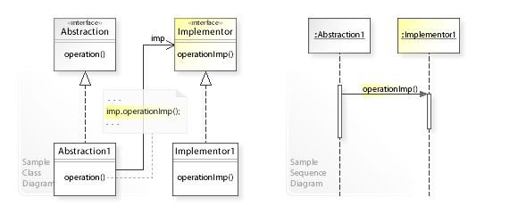
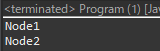

[Design pattern] 2-3. ブリッジパターン(Bridge pattern)
こんにちは。明月です。
この投稿はデザインパターンのブリッジパターン(Bridge pattern)に関する説明です。
ブリッジパターンとは概念として抽象部の処理と実装部の処理を独立的に使えるような方法です。理解しやすく言えば、抽象部は、つまりインターフェースから関数に関する処理を定義すると、継承した実装部、つまり、クラスには受け取ったインスタンスにより別の結果を実装する構造です。

reference - https://en.wikipedia.org/wiki/Bridge_pattern
#pragma once
#include <stdio.h>
#include <iostream>
#include <vector>
using namespace std;
// INodeインターフェース
class INode {
public:
// 抽象関数
virtual void print() = 0;
virtual ~INode() { }
};
// IBridgeインターフェース
class IBridge {
public:
// 抽象関数
virtual void exec() = 0;
virtual ~IBridge() { }
};
// INodeインターフェースを継承したNode1クラス
class Node1 : public INode {
public:
// 関数を再定義
virtual void print() {
// コンソールに出力
cout << "Node1 - print" << endl;
}
};
// INodeインターフェースを継承したNode2クラス
class Node2 : public INode {
public:
// 関数を再定義
virtual void print() {
// コンソールに出力
cout << "Node2 - print" << endl;
}
};
// IBridgeインターフェースを継承したBridgeクラス
class Bridge : public IBridge {
private:
// ブリッジパターンに使うメンバー変数
INode* node;
public:
// コンストラクタ、INodeのインスタンスを受け取る。
Bridge(INode* node) {
this->node = node;
}
// 実行
virtual void exec() {
// INodeインスタンスのprint関数実行
this->node->print();
}
// デストラクタ
~Bridge() {
// メモリ解除
delete node;
}
};
// 実行関数
int main() {
// Bridgeインスタンスを生成(Node1クラスのインスタンスを渡す。)
Bridge bridge1(new Node1());
// 関数実行
bridge1.exec();
// Bridgeインスタンス生成(Node2クラスのインスタンスを渡す。)
Bridge bridge2(new Node2());
// 関数実行
bridge2.exec();
return 0;
}
上の結果をみればBridgeのクラスにどのインスタンスを渡すことにより結果が違います。つまり、Node1インスタンスを渡すとNode1の結果がコンソールに出力するし、Node2インスタンスを渡すとNode2の結果がコンソールに出力されます。
BridgeクラスはINodeクラスの実行に関する定義を実装することでそのデータ値により結果が別々に出力されます。
// INodeインターフェース
interface INode {
// 抽象関数
String output();
}
// IBridgeインターフェース
interface IBridge {
// 抽象関数
void print();
}
// INodeインターフェースを継承したNodeクラス
class Node1 implements INode {
// 関数再定義
public String output() {
// 値をリターン
return "Node1";
}
}
// INodeインターフェースを継承したNodeクラス
class Node2 implements INode {
// 関数再定義
public String output() {
// 値をリターン
return "Node2";
}
}
// IBridgeインターフェースを継承したBridgeクラス
class Bridge implements IBridge {
// ブリッジパターンに使うメンバー変数
private INode node;
// コンストラクタ、INodeのインスタンスを受け取る。
public Bridge(INode node) {
this.node = node;
}
// 関数再定義
public void print() {
// ブリッジパターンのメンバー変数のoutput関数の結果値をコンソールに出力
System.out.println(this.node.output());
}
}
public class Program {
// 実行関数
public static void main(String[] args) {
// Bridgeインスタンス生成、Node1のインスタンスを渡す。
var bridge1 = new Bridge(new Node1());
// print関数実行
bridge1.print();
// Bridgeインスタンス生成、Node2のインスタンスを渡す。
var bridge2 = new Bridge(new Node2());
// print関数実行
bridge2.print();
}
}

Javaの例もC++と似ている構造です。ブリッジパターンはほぼ規格されたパターンかな?別の型で応用しようと思うが、良い例がないですね。
私が知らない可能性もあります。
using System;
// Controllerインターフェース
public interface Controller
{
// 抽象関数
void Execute(Model model);
}
// Modelインターフェース
public interface Model
{
// 抽象関数
String GetData();
}
// MVC型のフレームワークでModelクラス(パラメータ)
public class ParameterModel : Model
{
// メンバー変数
private string data;
// コンストラクタ
public ParameterModel(string data)
{
// メンバー変数にデータを格納
this.data = data;
}
// 関数再定義、データ取得関数
public String GetData()
{
// dataリターン
return this.data;
}
}
// MVC型のフレームワークでControllerクラス
public class MainController : Controller
{
// 関数再定義、modelのインスタンスを受け取る。
public void Execute(Model model)
{
// コンソールに出力、modelのデータを取得
Console.WriteLine("Execute - " + model.GetData());
}
}
class Program
{
// 実行関数
static void Main(string[] args)
{
// Controllerインスタンス
var controller = new MainController();
// ウェブ要請する場合にパラメータmodelインスタンス
var model = new ParameterModel("Hello world");
// Controller実行
controller.Execute(model);
// 任意のキーを押してください
Console.WriteLine("Press any key...");
Console.ReadKey();
}
}
このブリッジパターンは我々が良く使うMVC型のフレームワークでよく見えるパターンです。
Client(Browser)から要請が来るとパラメータをModelクラスにインスタンス生成してControllerを呼び出して実際に我々が作成する実装部はControllerのExecute関数です。
抽象部分はすべてフレームワークで実行されていますね。
ここまでデザインパターンのブリッジパターン(Bridge pattern)に関する説明でした。
ご不明なところや間違いところがあればコメントしてください。
- [Design pattern] 3-2. 責任の連鎖パターン(Chain of responsibility pattern)2021/11/04 19:27:58
- [Design pattern] 3-1. ストラテジーパターン(Strategy pattern)2021/11/03 18:38:52
- [Design pattern] 2-7. ファサードパターン(Facade pattern)2021/11/02 19:32:31
- [Design pattern] 2-6. プロキシパターン(Proxy pattern)2021/11/01 19:42:44
- [Design pattern] 2-5. フライウェイトパターン(Flyweight pattern)2021/10/29 19:48:27
- [Design pattern] 2-4. デコレーターパターン(Decorator pattern)2021/10/28 20:11:13
- [Design pattern] 2-3. ブリッジパターン(Bridge pattern)2021/10/27 20:32:21
- [Design pattern] 2-2. コンポジットパターン(Composite pattern)2021/10/27 20:30:54
- [Design pattern] 2-1. アダプターパターン(Adapter pattern)2021/10/26 19:12:40
- [Design pattern] 1-5. プロトタイプパターン(Prototype pattern)2021/10/22 19:35:45
- [Design pattern] 1-4. デザインパターンの抽象ファクトリーパターン(Abstract factory pattern)2021/10/15 19:31:03
- [Design pattern] 1-3. ファクトリーメソッドパターン(Factory method pattern)2021/06/23 19:45:37
- [Design pattern] 1-2. ビルダーパターン(Builder pattern)2021/06/11 19:06:28
- [Design pattern] 1-1. シングルトンパターン(Singleton pattern)2021/06/09 19:40:05
- [C#] 61. ウィンドウフォーム(Window form)でスレッド(Thread)を使い方、クロススレッド問題解決2021/11/04 19:29:51
- [Design pattern] 3-2. 責任の連鎖パターン(Chain of responsibility pattern)2021/11/04 19:27:58
- [Design pattern] 3-1. ストラテジーパターン(Strategy pattern)2021/11/03 18:38:52
- [C#] 60. ウィンドウフォーム(Window form)のイベント設定する方法2021/11/02 21:18:08
- [Design pattern] 2-7. ファサードパターン(Facade pattern)2021/11/02 19:32:31
- [Design pattern] 2-6. プロキシパターン(Proxy pattern)2021/11/01 19:42:44
- [Design pattern] 2-5. フライウェイトパターン(Flyweight pattern)2021/10/29 19:48:27
- [C#] 59. ウィンドウフォーム(Window form)にコントロール(Control)を使い方法2021/10/29 19:45:43
- [Design pattern] 2-4. デコレーターパターン(Decorator pattern)2021/10/28 20:11:13
- [C#] 58. ウィンドウフォーム(Window form)を作成する方法、そしてウィンドウメッセージとキュー2021/10/27 20:35:44
- [Design pattern] 2-3. ブリッジパターン(Bridge pattern)2021/10/27 20:32:21
- [Design pattern] 2-2. コンポジットパターン(Composite pattern)2021/10/27 20:30:54
- [Design pattern] 2-1. アダプターパターン(Adapter pattern)2021/10/26 19:12:40
- [Project design] プログラム最終テスト - ST(System test(Standard, Scenario))2021/10/26 19:10:07
- [Project design] プログラム結合テスト - IT(Integration test)2021/10/25 20:12:17